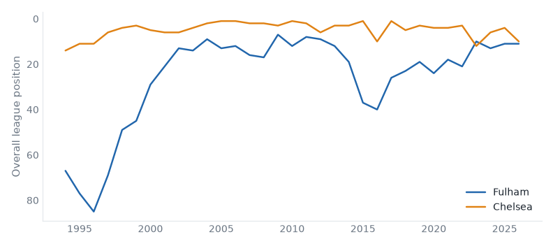

1 fixtures across 1 divisions, week of 24 August 2026.
Fulham host Chelsea in the Premier League on Monday 24 August. Fulham live between the Premier League and the Championship; they sit 11th with 52 points from 38 games, form WDLLW. Chelsea have never played outside the Premier League; they sit 10th with 52 points from 38 games, form LWDLL. They have met 38 times in league play since 1993: Fulham 4 wins, Chelsea 23, 11 drawn.

|
|
Generated from football-data.co.uk results, Tiers 1–5, 1993/94–present.